Methodology

Overview of the SAGE Framework.

Hierarchical routing behavior with prior-guided logit modulation.
Original Image
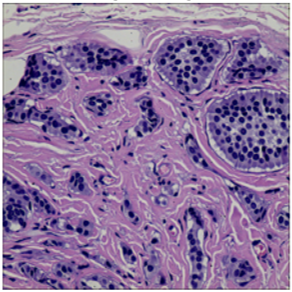
Ground Truth
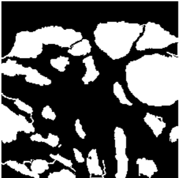
Prediction
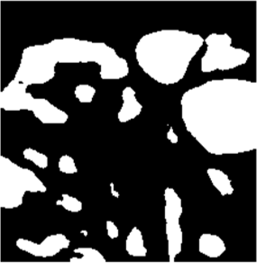
CNN Main Path
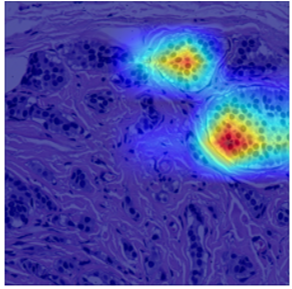
Transformer Block 1
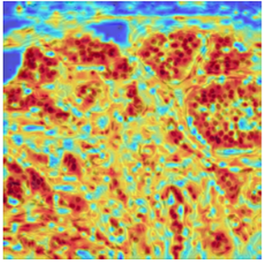
Transformer Block 11
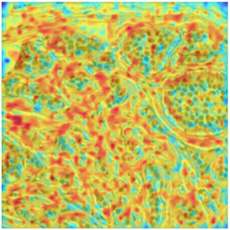
Transformer Main Path
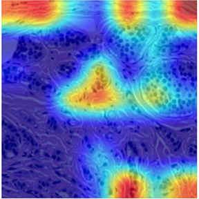
CNN Block 2
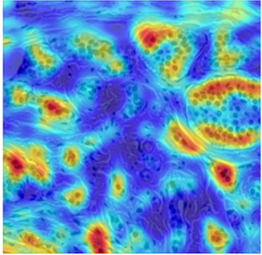
Transformer Block 2
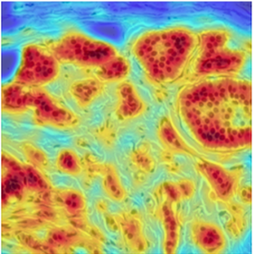
Explainability visualization of dynamic expert routing in SAGE on the EBHI dataset. Grad-CAMs highlight contributions from the CNN and Transformer main paths and their expert blocks. SAGE adaptively redistributes attention across heterogeneous modules, revealing interpretable expert collaboration during inference.
The significant variability in cell size and shape continues to pose a major obstacle in computer-assisted cancer detection on gigapixel Whole Slide Images (WSIs), due to cellular heterogeneity. Current CNN-Transformer hybrids use static computation graphs with fixed routing. This leads to extra computation and makes it harder to adapt to changes in input. We propose Shape-Adapting Gated Experts (SAGE), an input-adaptive framework that enables dynamic expert routing in heterogeneous visual networks. SAGE reconfigures static backbones into dynamically routed expert architectures via a dual-path design with hierarchical gating and a Shape-Adapting Hub (SA-Hub) that harmonizes feature representations across convolutional and transformer modules. Embodied as SAGE with ConvNeXt and Vision Transformer UNet (SAGE-ConvNeXt+ViT-UNet), our model achieves a Dice score of $95.23\%$ on EBHI, $92.78\%$/$91.42\%$ DSC on GlaS Test A/Test B, and $91.26\%$ DSC at the WSI level on DigestPath, while exhibiting robust generalization under distribution shifts by adaptively balancing local refinement and global context. SAGE establishes a scalable foundation for dynamic expert routing in visual networks, thereby facilitating flexible visual reasoning.
Overview of the SAGE Framework.
Hierarchical routing behavior with prior-guided logit modulation.
SAGE-UNet outperforms baselines on EBHI, DigestPath, and GlaS, yielding state-of-the-art Dice Scores.
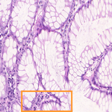
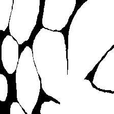
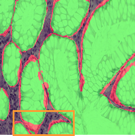
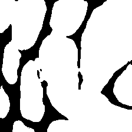
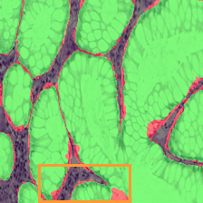
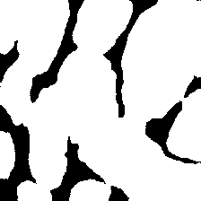
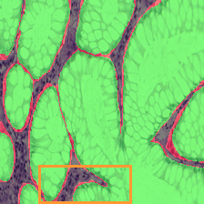
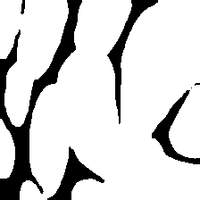
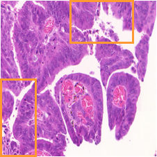
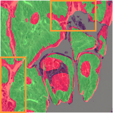
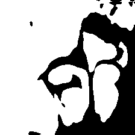
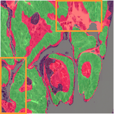
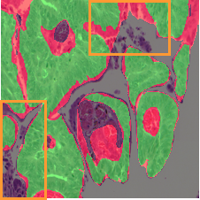
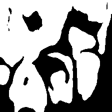
Figure 8: Qualitative comparison on GlaS test samples.
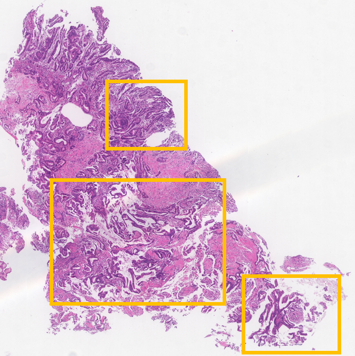
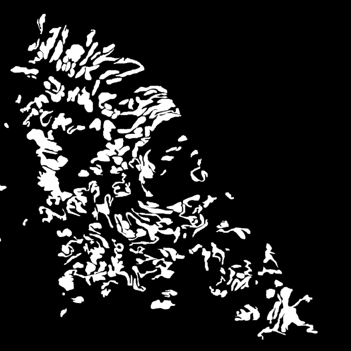
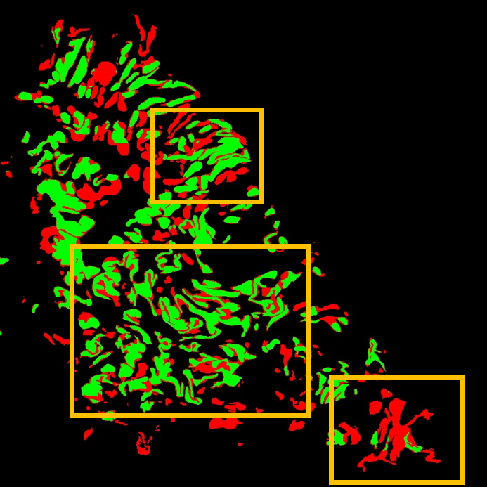
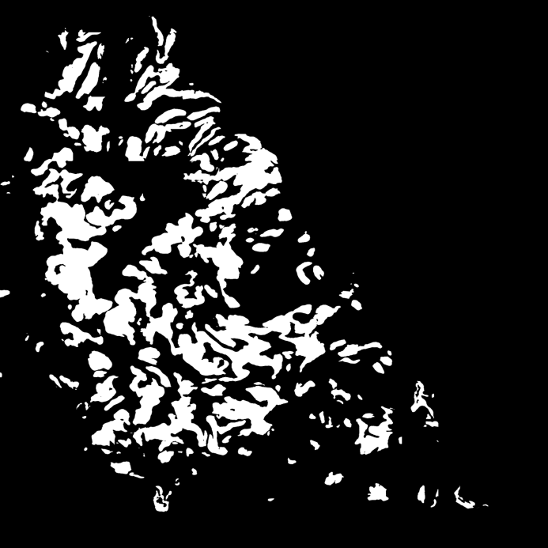
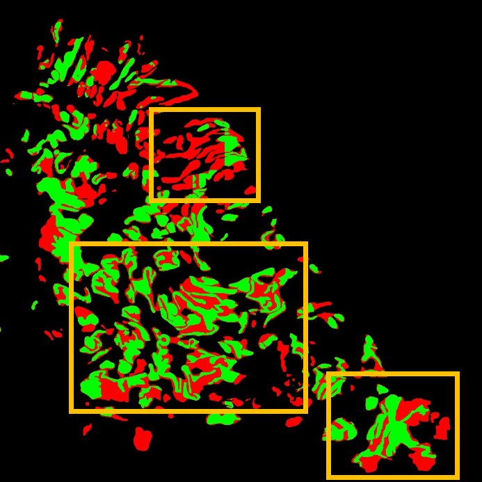
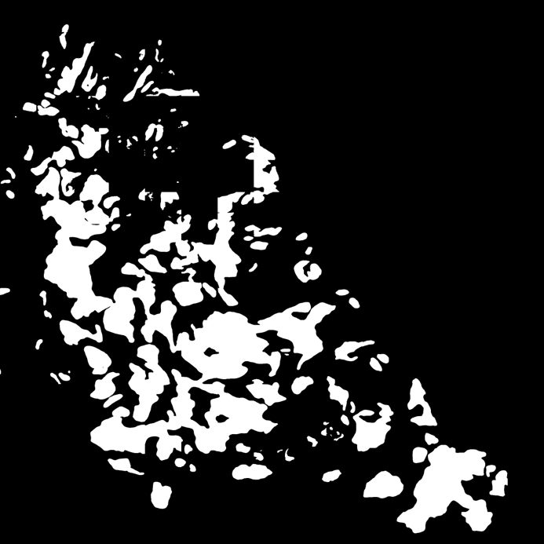
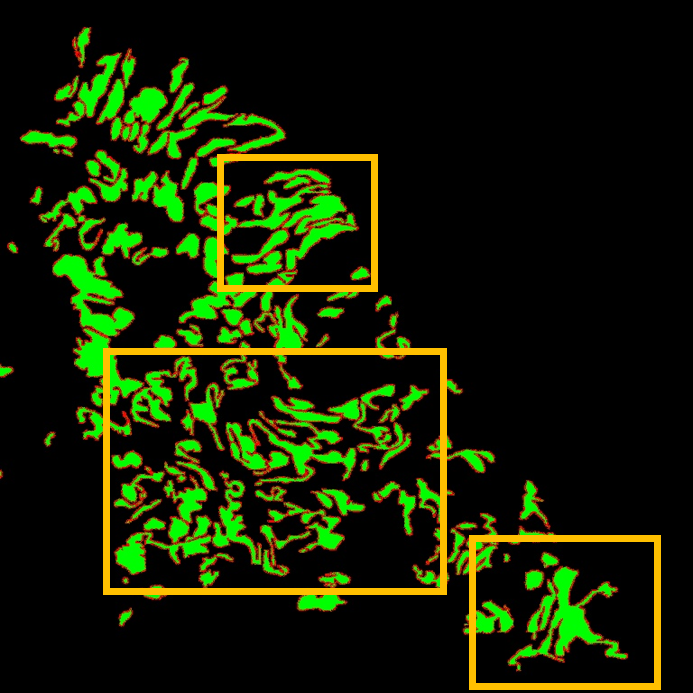
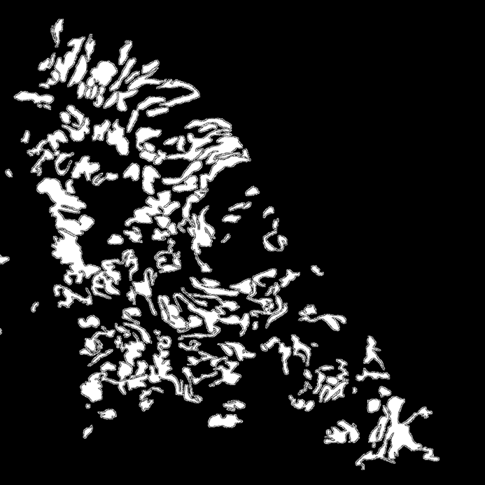
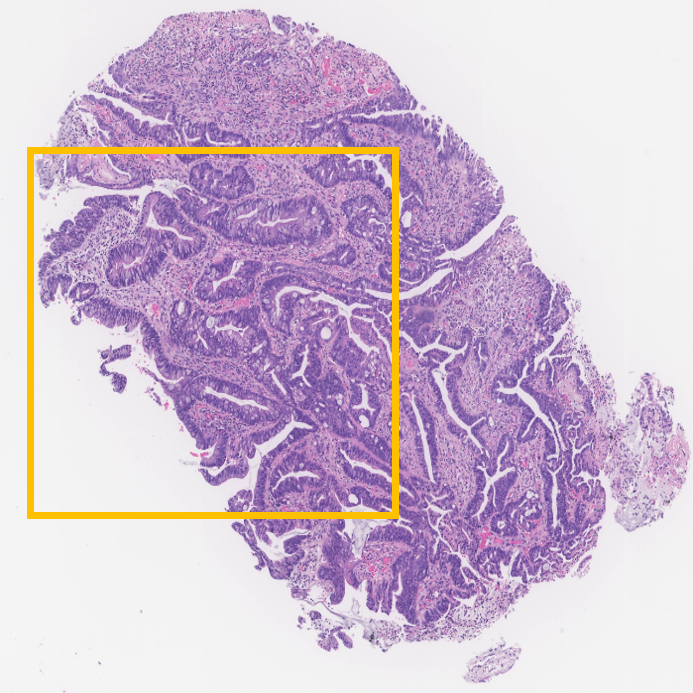
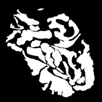
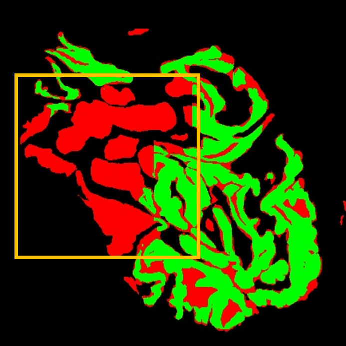
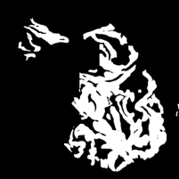
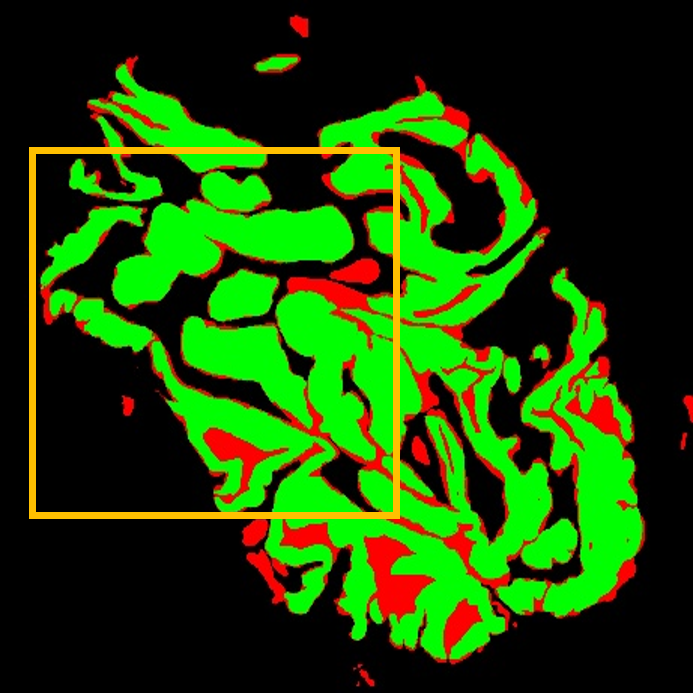
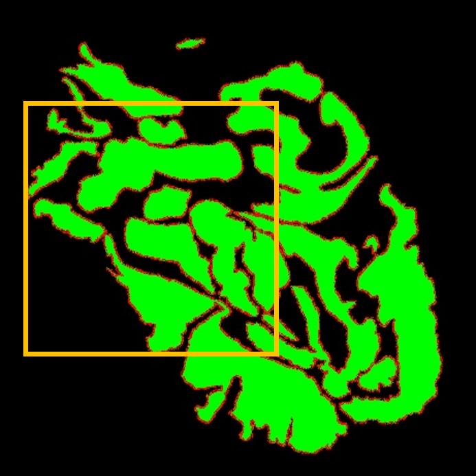
Figure 9: Qualitative comparison on Digestpath WSI test samples.
@inproceedings{sage2026shape,
title={SAGE: Shape-Adapting Gated Experts for Adaptive Histopathology Image Segmentation},
author={Thai, Gia Huy and Vu, Hoang-Nguyen and Phan, Anh-Minh and Ly, Quang-Thinh and Dinh, Tram and Nguyen, Thi-Ngoc-Truc and Ho, Nhat},
booktitle={Proceedings of the IEEE/CVF Conference on Computer Vision and Pattern Recognition (CVPR) - Findings Track},
year={2026},
pages={17189--17199}
}